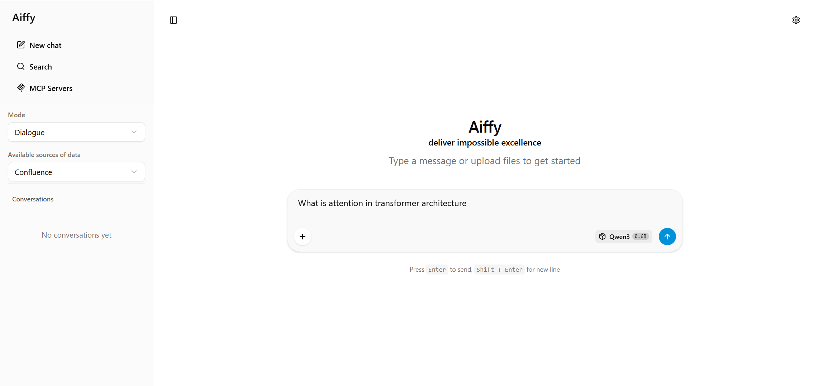

Aiffy is a chat UI for LLM workflows — a polished, browser-based interface for local and self-hosted large language models, designed for fast chat interaction, prompt testing, and practical model tooling.

Local language models have moved from a research curiosity to a practical tool. Developers, researchers, and small teams want to experiment with open-weight models on their own hardware, test prompts privately, and connect models to internal tools — without sending data to a hosted provider. What is missing in many setups is a clean, opinionated interface that ties the model server, the chat experience, and the tooling layer together.
Aiffy is built to fill exactly that gap. It is an adaptive UI shell for large language models that combines a SvelteKit + TypeScript frontend with a Python backend based on FastAPI and Hugging Face Transformers. The same build runs equally well as a personal app on a developer workstation or as a deployed service behind a shared host, with a familiar chat experience, responsive interaction, and straightforward integration with model backends — suitable for local or remote inference, prompt testing, and everyday work with language models.
Aiffy is not a wrapper around a hosted API. It is a complete local stack with two components that ship together:
Hugging Face Transformers and exposes a chat endpoint;The frontend is compiled into a static bundle that the Python server serves directly, so a single process is enough to run the entire product locally. There is no separate Node runtime to manage in production, no external database, and no required network calls beyond the optional model download from Hugging Face Hub.
Aiffy is designed around three principles:
Aiffy is intentionally easy to launch. After installing the Python dependencies, a single command brings up the server and serves the precompiled UI:
pip install -r requirements.txt
python server.py --model gpt2
Once the server is running, the demo is available in the browser at http://127.0.0.1:8080. The default port and host can be overridden with --port and --host, and a bearer token can be required via --api-key when the server is exposed beyond localhost.
Aiffy resolves the --model argument through a clear priority order, so you can move between local checkpoints and Hugging Face Hub models without changing how you launch the server:
models/ in the repository, it is taken from there;This means the same command shape works for a local GPT-2 checkpoint, a curated model in your repository, or a remote model identified by its Hub ID:
python server.py --model gpt2 --prompt-style raw
python server.py --model Qwen3-0.6B
python server.py --model Qwen/Qwen2.5-1.5B-Instruct
python server.py --model ./models/gpt2 --prompt-style raw
Device placement and dtype are auto-selected by default, with explicit overrides available for users who want to pin the model to cpu, cuda, or mps, or to force float16, bfloat16, or float32 precision.
Different families of models expect different prompt formats. Aiffy makes that explicit through a prompt-style switch instead of guessing silently:
auto (default) — uses the tokenizer's chat_template when available; otherwise falls back to a ChatML-style format with <|user|> and <|assistant|> markers. This is the right choice for instruction-tuned models such as Qwen-Instruct or Llama-Instruct.raw — concatenates the message contents with newlines and no role markers. This is the right choice for base completion models such as GPT-2, which simply continue the text.Choosing the wrong style is a common reason a local model produces gibberish or refuses to answer, so Aiffy treats this decision as an explicit configuration option rather than a hidden default.
Aiffy follows a simple rule for decoding mode: there is no separate do_sample flag. The mode is inferred from the temperature value. Any temperature meaningfully above zero enables stochastic sampling with the configured temperature, top_p, top_k, and repeat_penalty. A temperature of zero (or any value at or below a small epsilon) switches the model to deterministic greedy decoding.
This keeps the mental model small: one knob, one behaviour. Defaults are stored in a single DEFAULT_GEN_PARAMS object on the server and surfaced to the frontend as placeholders in the Settings → Generation tab. To force greedy decoding for a single request, simply set temperature: 0 in the request body or in the UI.
Appearance settings live in Settings → General → Theme and are persisted in browser storage. Aiffy ships with four themes out of the box:
System — follows the operating system colour scheme and switches automatically when the OS preference changes;Light — forces the light palette regardless of OS settings;Dark — forces the dark palette, suitable for low-light work;KDE Breeze — a Plasma-inspired theme with a blue accent on a dark base, with KDE-style radii and font tweaks layered on top of the dark token set.The theme system is designed to be extensible. Adding a new appearance is a matter of registering it in the theme enum, adding it to the settings list, and providing the matching CSS overrides — the rest of the UI picks it up automatically.
The first dropdown in the left sidebar controls how much conversation history is sent to the model on each turn. Aiffy offers two modes:
QA — sends only the latest user message plus any system message, treating each turn as an independent question.The selection is persisted in browser storage and synchronised across the UI. Filtering happens on the way out, just before the request is sent — the conversation in IndexedDB and on screen is never modified, so switching from QA back to Dialogue mid-thread restores the full context for the next request. This is also independent of the server-side history cap (--max-history), which limits history for any client; QA mode strips it client-side before the request even leaves the browser.
The left sidebar surfaces a list of configurable data sources — for example, projects in Jira, spaces in Confluence, or repositories on GitHub. The list is driven by a small JSON config file that the server serves alongside the UI bundle:
{
"Jira": ["Project Alpha", "Project Beta"],
"Confluence": ["Engineering Docs", "HR Space"],
"GitHub": ["frontend", "backend"]
}
The file can be edited directly with no rebuild required, which makes it easy to adapt the same Aiffy build to different teams or projects without recompiling the frontend.
Aiffy includes a built-in agent tooling layer that lets the server classify a user message into a tool call and execute it server-side, instead of generating a plain chat reply. A provider is a Python class that implements three methods:
classifier_prompt() — the system prompt for the intent-classification pass, instructing the model to return JSON;normalize_result() — validates and cleans the JSON the classifier returned;execute() — runs the tool by name and returns its result.The chat persona prompt and the classifier prompt are kept strictly separate. The persona is used when the classifier returns unknown and the request falls through to plain generation, while the classifier prompt is used only for the isolated classification pass. This separation is important — collapsing them into one prompt is the most common reason a tool-enabled model starts replying in JSON for ordinary chat messages.
A reference notebook provider ships with the project, demonstrating five tool intents (add, search, list, delete contacts and notes). Each tool method is a stub with a clear extension point, so building a new tooling backend is mostly a matter of swapping the prompt, normaliser, and tool implementations.
To make tooling reliable, Aiffy ships with a standalone test harness for the intent classifier. It loads the model directly, replays a curated set of utterances, and reports classification accuracy without starting the HTTP server, opening any ports, or requiring external services. This makes it easy to iterate on the classifier prompt and verify that real user phrasings are routed to the right tool before deploying changes.
The Settings panel exposes a full set of sampling parameters surfaced from the server's defaults. Empty values are shown as placeholders and are not sent on the wire — the server-side default is used instead. Out of the box, the UI exposes:
temperature, top_p, top_k, min_p — core sampling controls;repeat_penalty, presence_penalty, frequency_penalty — repetition controls;dynatemp_range, dynatemp_exponent — entropy-based dynamic temperature;xtc_probability, xtc_threshold — XTC sampler;dry_multiplier, dry_base, dry_allowed_length, dry_penalty_last_n — DRY sampler for long-context repetition control;max_tokens, typ_p, and a custom JSON field for arbitrary parameters.The same surface also includes quality-of-life options: keeping generation statistics visible after the response finishes, displaying tokens-per-second and duration under each assistant message, rendering user content as Markdown, controlling autoscroll behaviour, and pre-encoding the conversation after each turn so that the next prompt is already cached on the server while the user reads the previous reply.
Aiffy supports the Model Context Protocol. MCP servers can be configured directly from the settings UI as a JSON list and are invoked alongside built-in tools. Per-server usage statistics are tracked locally so it is easy to see which integrations are actually being used. This makes Aiffy a practical host for both ad-hoc personal MCP servers and shared team integrations.
Several features are tailored to modern open-weight models that emit chain-of-thought or that benefit from incremental generation:
Pyodide-based runtime that executes Python code blocks from the chat directly in the browser, with no server round trip.The project layout is intentionally small and easy to navigate:
server.py — the FastAPI server, model loading, prompt building, and the streaming chat endpoint;models/ — local model checkpoints (excluded from the repository);server/public/ — the compiled UI bundle and the runtime config.json;server/webui/src/ — the SvelteKit + TypeScript source for the frontend;server/webui/static/config.json — the source data-source configuration that is copied into server/public/ on every build.Rebuilding the UI is only required when the frontend source changes. A standard npm install followed by npm run build produces the bundle that the Python server then serves directly.
The open-source LLM UI ecosystem is crowded — text-generation web UIs, chat shells around llama.cpp, hosted-model playgrounds, and full AI workspaces all coexist. Aiffy occupies a deliberately narrow niche: it is the UI shell you reach for when you want a clean, opinionated chat experience over your own model, with first-class support for prompt iteration and a small but useful tooling layer.
Aiffy is a strong fit when you want to:
It is intentionally not a multi-user SaaS, a document-RAG workspace, or a vector database manager. That focus is what keeps the surface small and the experience fast.
Aiffy is a small but complete local UI for large language models. It pairs a SvelteKit chat interface with a FastAPI + Transformers backend, supports both base and instruction-tuned models through an explicit prompt-style switch, exposes a full set of sampling controls, and includes a clean tooling layer for intent classification and tool execution. The visual side is taken care of with four built-in themes — System, Light, Dark, and KDE Breeze — and the conversation side with explicit Dialogue and QA (Question-Answering) modes.
For developers and AI practitioners who want a private, chat-first interface to their own model, with a well-defined surface for extension and no cloud dependencies, Aiffy provides a practical starting point.
GitHub Link: https://github.com/aitetic